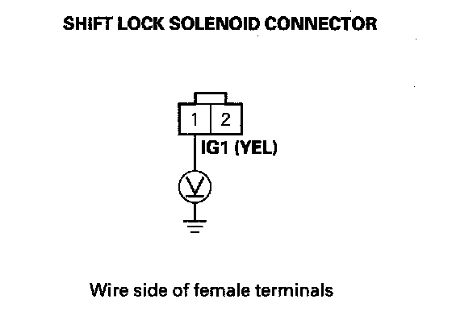
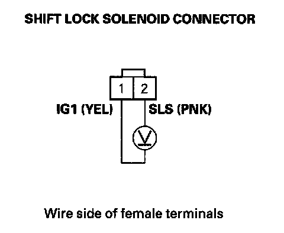
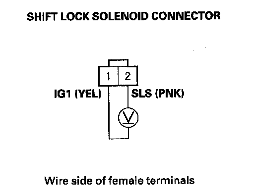
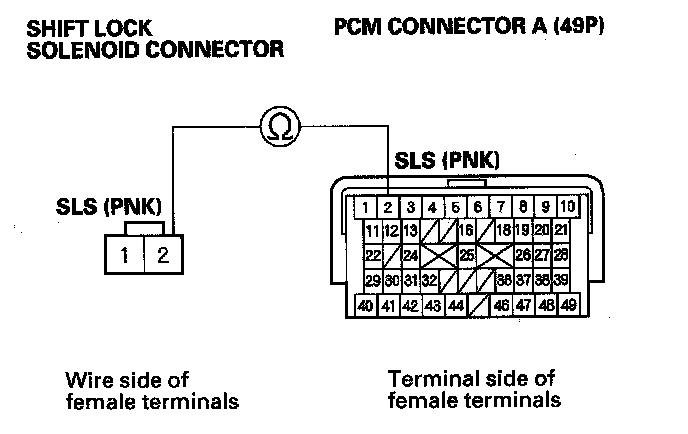
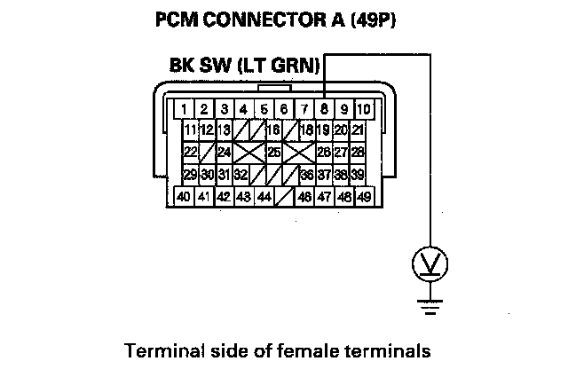
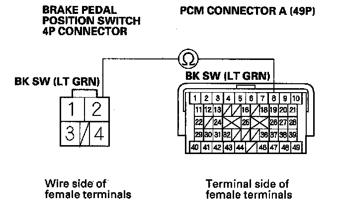
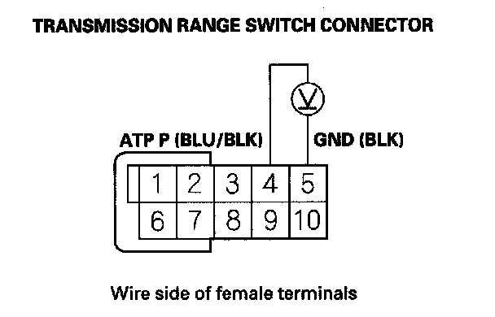
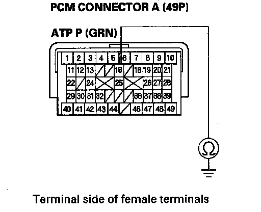
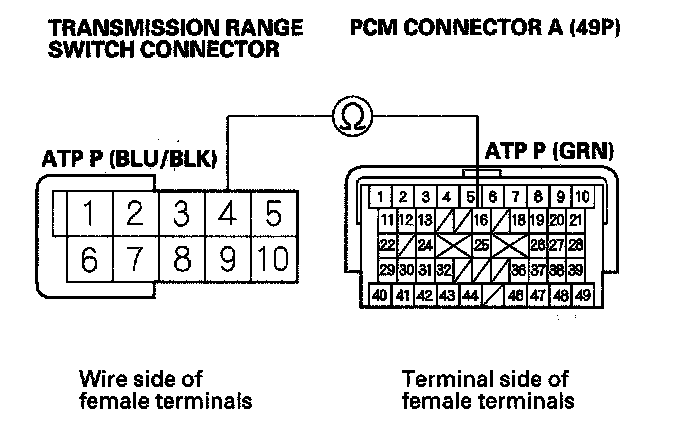
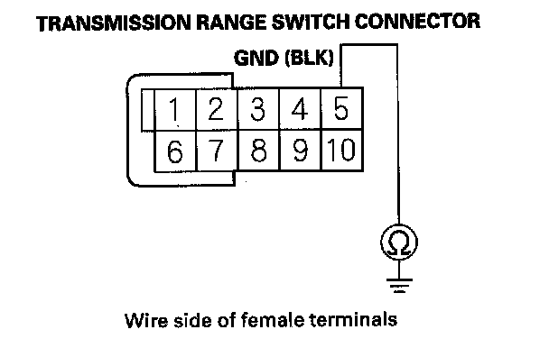

Shift Lock System Circuit Troubleshooting
Shift Lock System Circuit Troubleshooting1. Connect the HDS to the DLC.
2. Choose Shift Lock Solenoid Test in the Miscellaneous Test Menu, and check that the shift lock solenoid operates with the HDS.
NOTE: If the HDS does not communicate with the PCM, troubleshoot the DLC circuit.
Does the shift lock solenoid work properly?
YES - Go to step 14.
NO - Go to step 3.
3. Remove driver's center console trim.
4. Disconnect the shift lock solenoid connector.
5. Turn the ignition switch ON (II).
6. Measure the voltage between shift lock solenoid connector terminal No. 1 and body ground.

Is there battery voltage?
YES - Go to step 7.
NO - Check for a blown No. 21 (7.5 A) fuse in the under-dash fuse/relay box. If the fuse is OK, repair open or short in the wire between the shift lock solenoid connector terminal No. 1 and the under-dash fuse/relay box.
7. Shift the shift lever into the P position, and press the brake pedal. Do not press the accelerator.
8. Measure the voltage between shift lock solenoid connector terminals No. 1 and No. 2 while pressing the brake pedal.

Is there battery voltage?
YES - Go to step 9.
NO - Go to step 10.
9. Release the brake pedal, and measure the voltage between shift lock solenoid connector terminals No. 1 and No. 2. The shift lever must be in the P position.

Is there battery voltage?
YES - Repair short in the wire between PCM connector terminal A2 and the shift lock solenoid.
NO - Check the shift lock mechanism. If the mechanism is OK, replace the shift lock solenoid.
10. Turn the ignition switch OFF.
11. Jump the SCS line with the HDS.
12. Disconnect PCM connector A (49P).
13. Check for continuity between PCM connector terminal A2 and shift lock solenoid connector terminal No. 2.

Is there continuity?
YES - Substitute a known-good PCM and recheck.
NO - Repair open in the wire between PCM connector terminal A2 and the shift lock solenoid.
14. Press the brake pedal.
Are the brake lights ON?
YES - Go to step 15.
NO - Repair faulty brake light circuit.
15. Turn the ignition switch OFF.
16. Jump the SCS line with the HDS.
17. Disconnect PCM connector A (49P).
18. Measure the voltage between PCM connector terminal A8 and body ground while pressing the brake pedal and when the brake pedal is released.

Is there battery voltage while the brake pedal is pressed, and no voltage when the pedal is released?
YES - Go to step 20.
NO - Go to step 19.
19. Check for continuity between PCM connector terminal A8 and brake pedal position switch 4P connector terminal No. 2.

Is there continuity?
YES - Substitute a known-good PCM and recheck.
NO - Repair open in the wire between PCM connector terminal A8 and the brake pedal position switch.
20. Connect PCM connector A (49P).
21. Disconnect the transmission range switch connector.
22. Turn the ignition switch ON (II).
23. Measure the voltage between transmission range switch connector terminals No. 4 and No. 5.

Is there battery voltage?
YES - Go to step 28.
NO - Go to step 24.
24. Turn the ignition switch OFF.
25. Disconnect PCM connector A (49P).
26. Check for continuity between PCM connector terminal A16 and body ground.

Is there continuity?
YES - Repair short in the wire between PCM connector terminal A16 and the transmission range switch connector.
NO - Go to step 27.
27. Check for continuity between PCM connector terminal A16 and transmission range switch connector terminal No. 4.

Is there continuity?
YES - Go to step 28.
NO - Repair open in the wire between PCM connector terminal A16 and the transmission range switch connector.
28. Check for continuity between transmission range switch connector terminal No. 5 and body ground.

Is there continuity?
YES - Substitute a known-good PCM and recheck.
NO - Repair open in the wire between transmission range switch connector terminal No. 5 and ground (G101) or repair poor ground (G101).
29. Test the transmission range switch.
Is the switch OK?
YES - Go to step 30.
NO - Replace the transmission range switch.
30. Connect the HDS to the DLC.
31. Check the accelerator pedal position sensor 1 in the data list with the HDS. Do not press the accelerator.
Is the accelerator pedal position sensor 1 opening 11% and above, or the sensor 1 voltage 0.90 V and above?
YES - Check the throttle body.
NO - Substitute a known-good PCM and recheck.